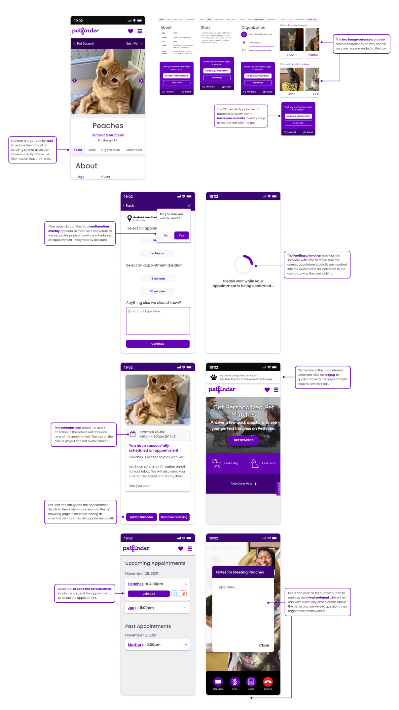
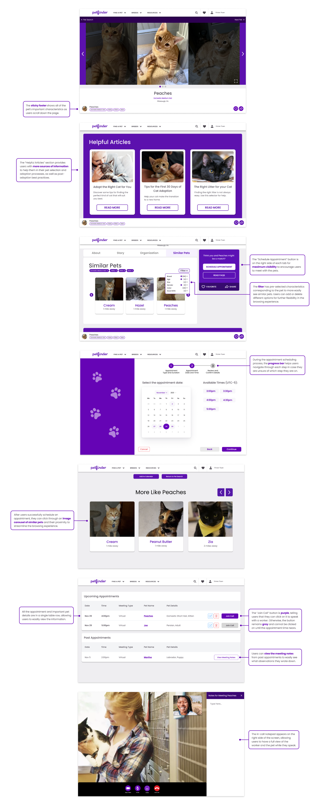

introduction
For this project, we selected a specific domain to focus on and created a responsive web design responding to a problem faced by users within that domain. Throughout the project, we conducted user research, created storyboards, and created low to high-fidelity prototypes, culminating in a pitch to Petfinder.
the domain
The domain that we selected was adopting or fostering a pet. We chose this domain because we believed that our potential designs could be the most impactful and we would easily be able to interview users around us.
the research
To understand what our users’ pain points were, we interviewed 5 people who had adopted or fostered pets before and created an affinity diagram and customer journey map based on our interview findings. For our interviews, we utilized the directed storytelling method to allow us to understand the users’ lived experiences, and we created an interview guide with framing questions and semi-structured followup questions to allow us to gain the most information and clarify any of the points that the user brought up.
After consolidating our research findings, we determined a few pain points:
- The process of researching for different pets and organizations to adopt/foster from was difficult
- The users felt that they did not receive enough information about the pet’s condition and how to take care of them after adoption
- The users loved meeting with the pets when they were able to, but it wasn’t always a possibility due to lack of updated information from the shelter or the location of the shelters being too far away
We decided to address the information gap during the pre-adoption research process by creating a virtual appointment scheduler for Petfinder, an established platform where users can look for available pets and their shelters online. The virtual scheduler allows users to see more effectively how the pet fits into their lives without having to travel, and shelter can help a greater number of pets get adopted by connecting them with more users.
paper and mid-fi prototypes
We started by creating mobile prototypes to focus on the information hierarchy and flow on a smaller screen. Currently, Petfinder has a card on the pet profile page with a button that says “Introduce Yourself” which users can click on to send their information to the shelter that houses the pet. We wanted to create another button on that card that would allow users to schedule either an in-person or virtual appointment and provide flexibility with the available times, as well as create a video chatting interface which would be housed on Petfinder to reduce the user’s potential technological constraints.

We conducted an in-class think aloud where we received a few points of feedback:
- Remove “introduce yourself” button to make it easier to distinguish between button functions
- Show shelter location during scheduling flow because it is an important factor
- Create a confirmation page before the final appointment details screen
- Small wording changes on the final appointment details screen
We designed a mobile mid-fidelity prototype and incorporated the feedback. We wanted the function to blend in with the rest of the Petfinder website, so we used a few key colors taken from their website.
We received the following feedback on the mid-fidelity prototype:
- Ability to edit an existing appointment
- More flexibility in seeing what similar pets there are
- Keywords about the pet’s main characteristics
final prototypes
mobile prototype
Below is the interactive final prototype for mobile. To restart the prototype from the scheduling appointment flow, press “r” on the keyboard. The clickable elements are highlighted in blue.
desktop prototype
Below is the final interactive prototype for desktop. To restart the prototype from the scheduling appointment flow, press “r” on the keyboard. The clickable elements are highlighted in blue.
takeaways
I learned a lot about user research from this project, and I gained valuable experience from being able to design for a specific domain and problem that arose from the research that I conducted.
- Rapid research methods provide quick and valuable insights. I had never used directed storytelling before, so it was amazing to see how just a few interviews could lead to so many different findings and pain points that we never would have known about. Directed storytelling can easily get to the deeper reasons behind why users feel a certain way.
- Customer journey maps effectively synthesize user experiences. This was my first time creating a customer journey map, and I found it very helpful in making sure that we had the users’ emotions, pain points, experiences, and improvement opportunities all in one place. This allowed us to easily focus on certain pain points to address in our design.
- Mobile-first design is useful when deciding initial layouts and features to include. This was my first time designing a high-fidelity interactive mobile prototype, and it was interesting discussing with my group about how we should approach mobile design vs. desktop design as we had many discussions about the best way to lay out information and what features we should include based on the medium that designed for.